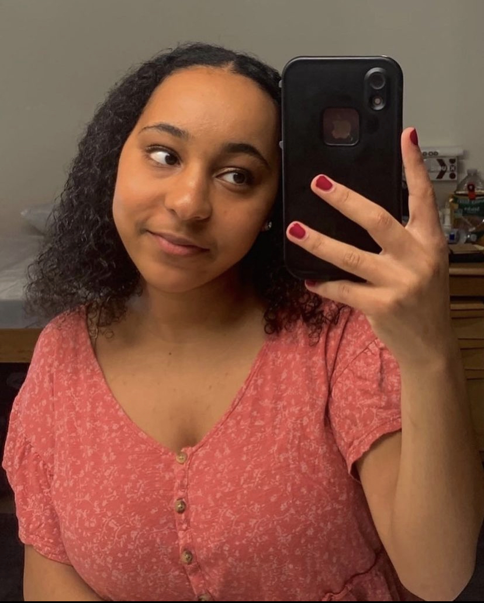
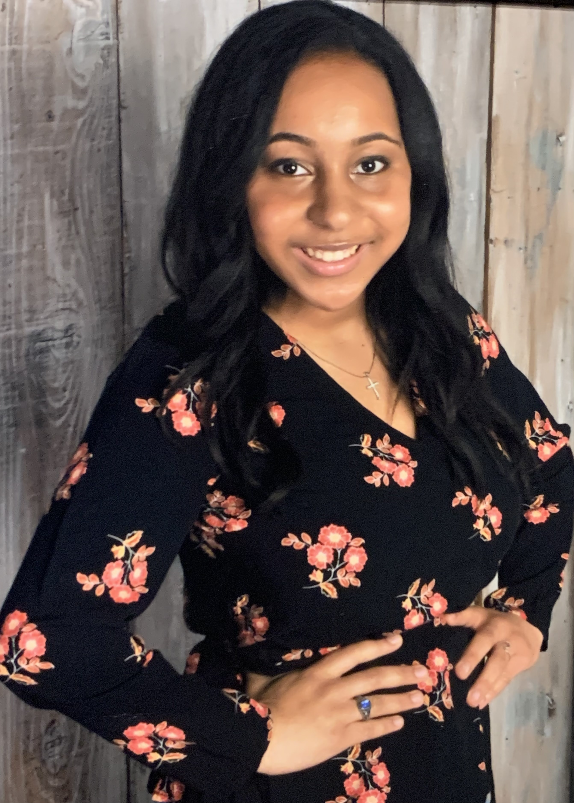
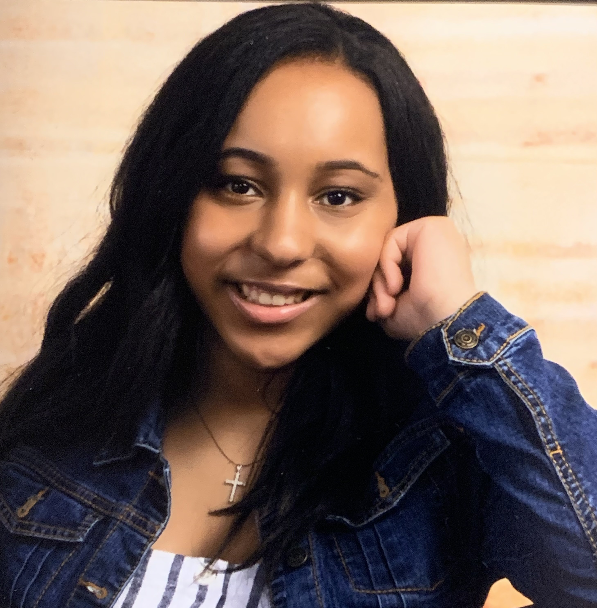
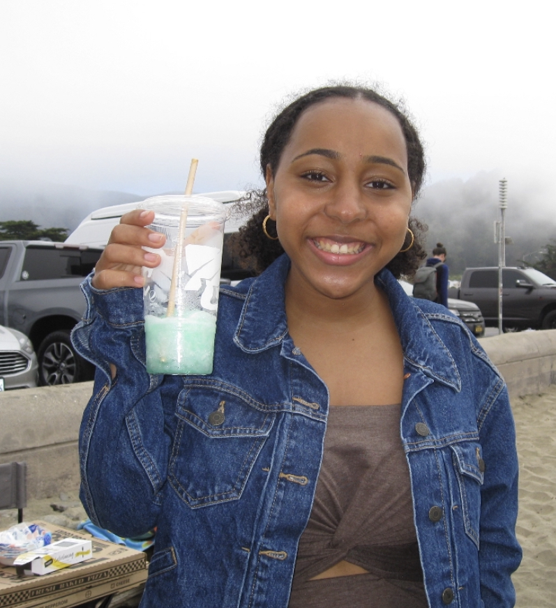
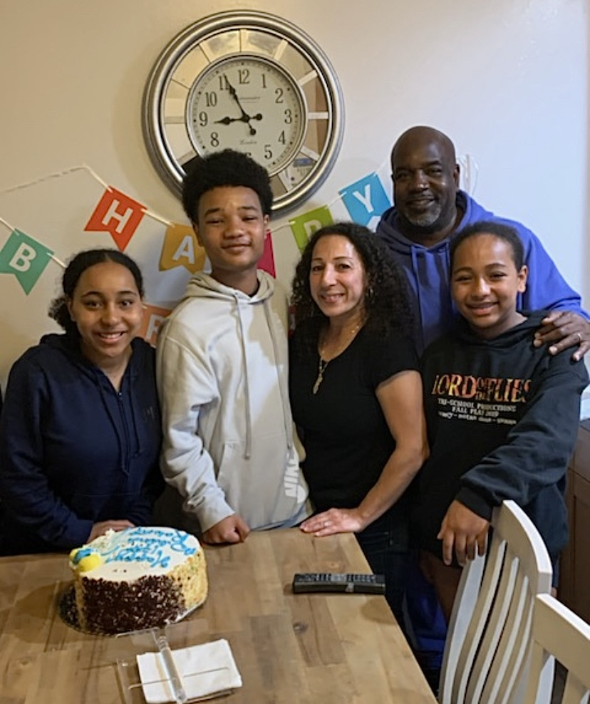
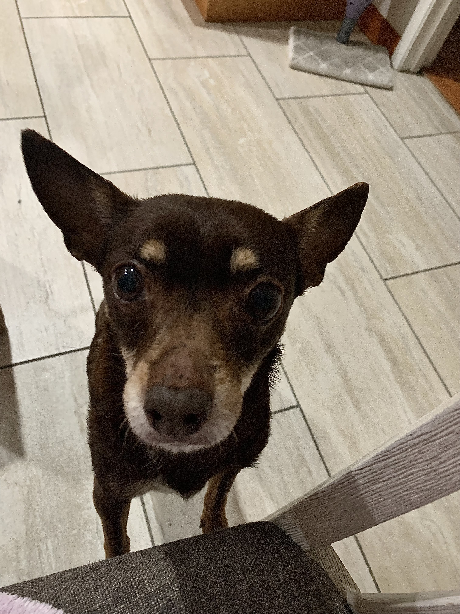
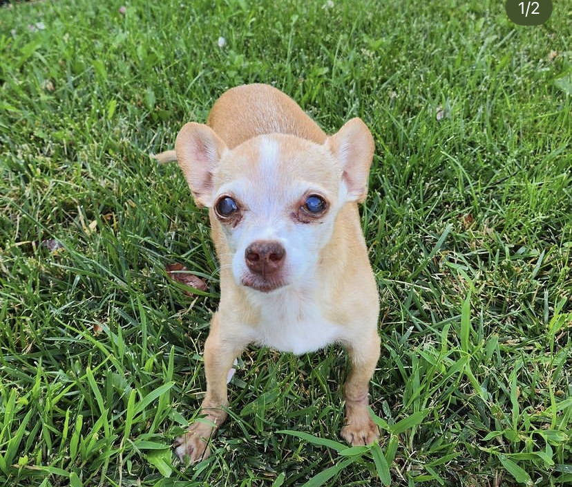
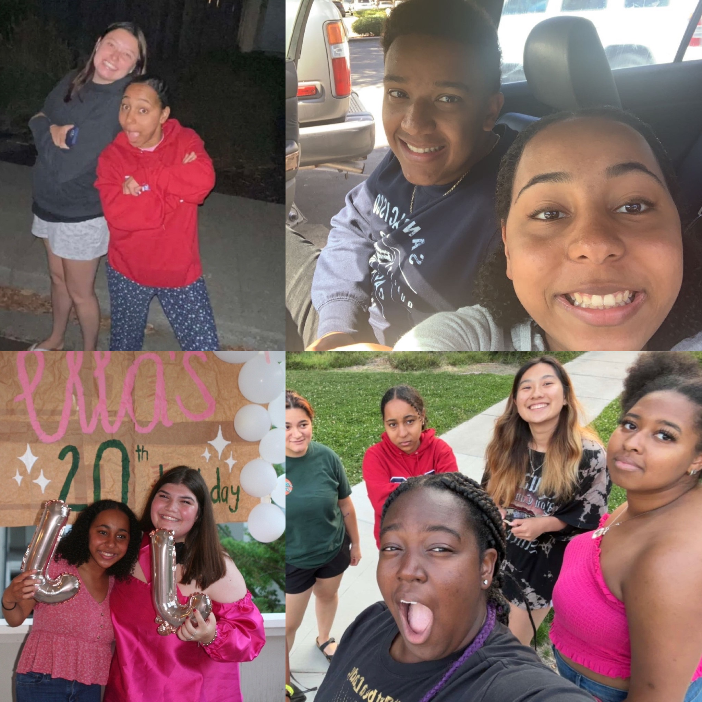

Hello :) My name is Amira Jones!
With this page, I would like to try to express myself by using photos, videos, and schedules/charts. I hope you get to learn a little bit more about me!
Fast Facts:
- I am a third year communications major and digital studies minor from San Francisco, California! I chose this field of study because it will allow me to be creative, teach me how to effectively communicate with others, and understand the role of social media and technology in society today.
- This is my first and probably last computer science course.
- Below are a few of my favorite photos of myself!
   My Family:
My family consists of my mom, my dad, my brother, & my sister!
My Dogs:
My dogs names are Sugar and Zeus!
 My SMC People <3:
In order my people are Abbyrose, David, Ella, Savannah, Ayanna, Lauren, & Nyah!
My Home Friends:
In order my home friends are Betsy, Veronica, Andrea, & Kayla!

My Hobbies:
Some of My Favorite Shows:
Sports I Love & Used To Play:
Classes I Am Taking Currently:
I chose to come to Saint Mary's for a few reasons. First, it was close to home. I am very close with my family and felt that it was important for me to stay close to home so I can go home whenever I wanted. Second, my cousin goes here and is a few years older than me, so I knew that there would be a familiar face around campus and I would not be alone. Third and finally, I chose Saint Mary's because it was a small school. I have only gone to small private schools and have done very well in that type of environment, so I felt that it would be too overwhelming to go to a bigger school. At Saint Mary's, I can form relationships with my teachers and peers easily which definitely helps my learning. I am glad I chose this school. I have made close bonds and relationships with people here which has made my college experience that much more enjoyable.
| Course | Meeting Days | Start Time | End Time |
|---|---|---|---|
| Seminar 303 | M, W | 9:15 am | 10:30 am |
| Social Media and Society | T, Th | 8:00 am | 9:40 am |
| CS 102 | T, Th | 11:45 am | 12:55 pm |
| Audio Production | T, Th | 3:20 pm | 5:00 pm |